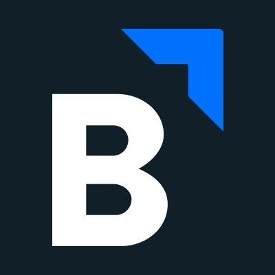

Development Experience
 Intern @ Bluescape
- Timeline: January - April 2020
- Location: Kitchener, Canada
Bluescape is a midsized startup based in San Carlos, California, with a remote office of primarily engineers working on their web product in downtown Kitchener. Their product is a concurrent multi-user workspace that has enhanced team collaboration for many customers, including a few fairly prominent companies in the tech space. My time at Bluescape familiarized me with middleware and best practices for designing and implementing software at a midsized company.
My work during my time at Bluescape focused on building a proof-of-concept for an undo feature, based on Contextual Operational Transformation. When I left, the project was mostly complete and fully functional for a large proportion of the most frequently used features of the product.
Intern @ Bunz
- Timeline: May - August 2019
- Location: Toronto, Canada
Bunz is a small startup doing big things that has been influencing the landscape of purchasing habits and second-hand sales amongst young adults in Toronto and worldwide through their bartering mobile app. When I joined, there were just about twenty people on the Bunz team and six full-time engineers. It was an all-hands-on-deck experience that taught me immense amounts about not only software development, but best practices in a tech startup, and how engineering, product, sales, and marketing interact and work together for the benefit of the company.
Something I worked on was an instant mockups tool, created with HTML, CSS, and Javascript. It allowed the sales team to upload clients' assets and immediately generate mockups, reducing the time required for that task from three days to thirty seconds. At a time when the focus of the company was to push revenue growth and increasingly more clients were working with Bunz, this internal tool was incredibly valuable to that productivity of the sales team and the company overall.